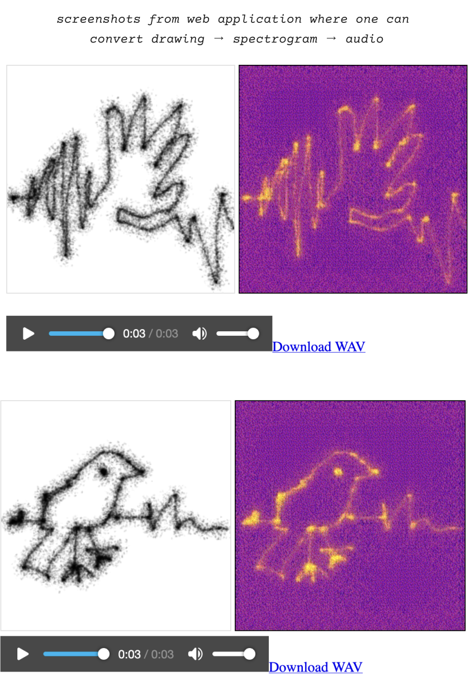
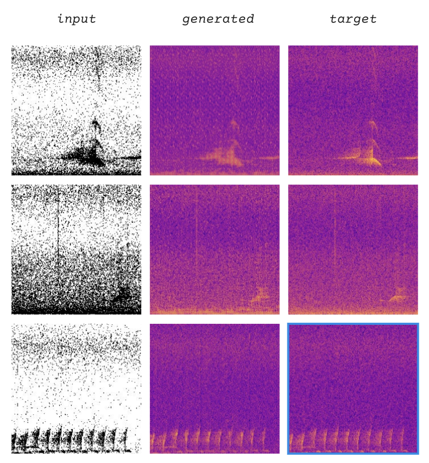

Laura Cortés-Rico
Laura took field recordings of birdsongs in an area of planned data center site in upstate NY. Laura’s pix2pix dataset comprised of spectrograms from these recordings paired with edge detection versions of these images allowing the model to learn how to go from black and white minimal image → spectrogram. This allowed Laura to build a web application where one could generate spectrograms from their drawings and then using Javascript, convert those spectrograms back into audio. As I play with the application I am struck by how similar all the audio sounds to birdsong, or the original source material.

